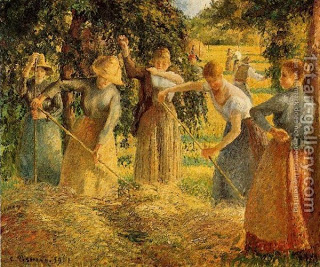

Bava Metzia 89 - Workers Prepare to Eat More
Workers who are partaking from the harvest naturally want to eat more, and their employer wants them to eat less.
The employer is allowed to ply the workers with wine so that they will not be inclined to eat many grapes. The workers are allowed to dip their bread in brine, so that they will be inclined to eat more grapes. However, the workers are not allowed to eat anything along with the grapes in order to increase their appetite for them.
Can the workers prepare their food in a more delectable way, such as toast the grains or grapes in fire? This is different from preparing themselves to eat more and different from adding something else to the food. The last question remains unresolved at this time.